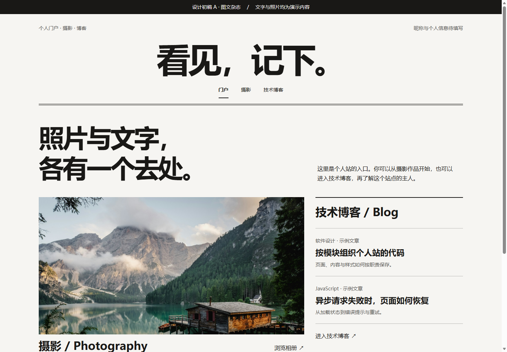
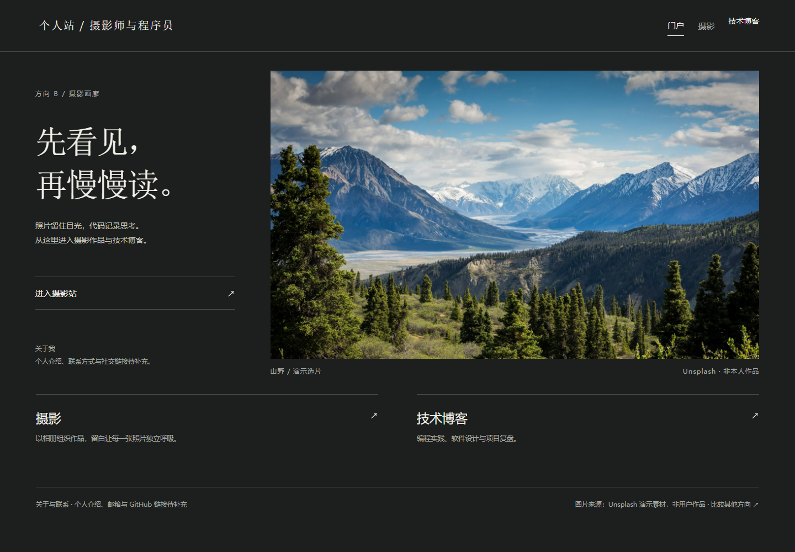
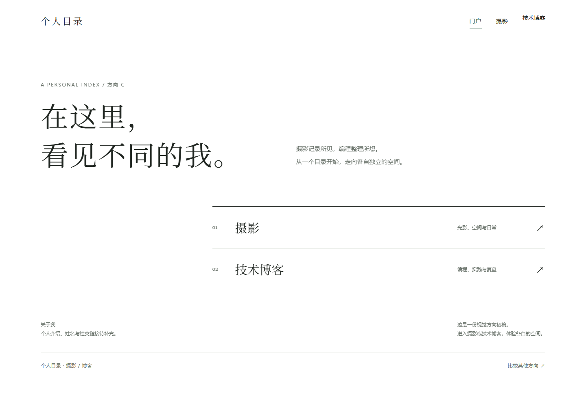

A · 图文杂志

黑白大字、图文并列。门户入口并列，摄影与技术各自独立。
打开初稿 A →恢复初版的视觉与版式：摄影保留大幅照片，技术博客拥有独立入口与页面。个人信息与内容均为演示。

黑白大字、图文并列。门户入口并列，摄影与技术各自独立。
打开初稿 A →
深色画廊、大幅照片。进入摄影站后，让照片成为主角。
打开初稿 B →
留白和文字索引。入口直接，适合快速了解你。
打开初稿 C →可以选择一版，也可以组合：例如 C 的门户、B 的摄影、独立的技术博客。正式实现将按模块分文件夹保存。